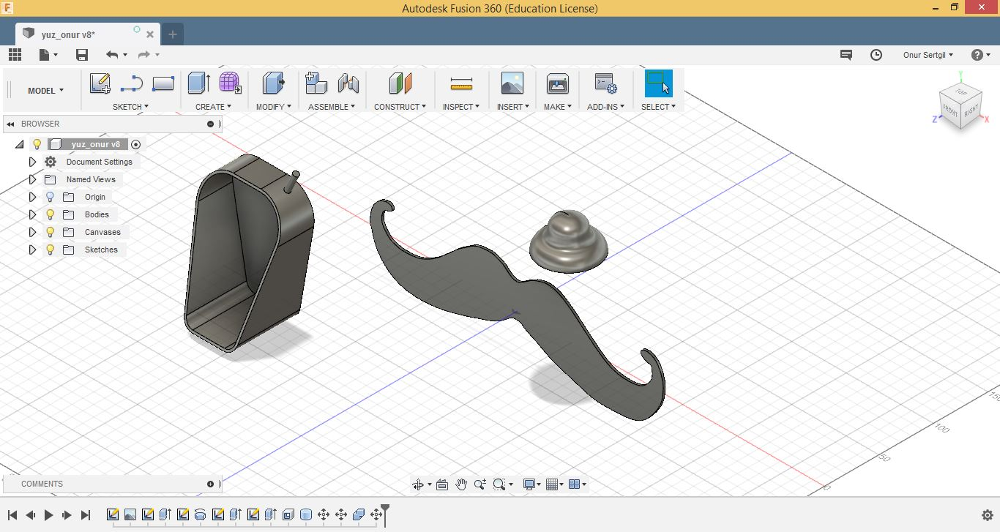

Fusion360 ile 3D Tasarım Yaptık!
by Onur Sertgil
17 Temmuz 2018

Bugün Fusion360 adlı 3 boyutlu ve 2 boyutlu tasarım programını öğrendik. Bunu, FABİ adlı karakterin yüzünü ve gövdesini tasarlayarak yaptık.
Öncelikle programı tanımak amacıyla bir sketch oluşturduk ve burada programın bize sunduğu çeşitli fonksiyonları denedik. Çizgiler, eğriler çizdik ve bunları kırptık, böldük, şekillendirdik.
Bunların ardından, teknik çizim notlarıyla birlikte FABİ'nin yüzünü tasarlamaya başladık. Teknik çizim notlarındaki ölçülerle yüzün ana hatlarını oluşturduk ve ardından köşeleri pahlayarak FABİ'nin yüzünün dış hatlarını elde ettik. Tüm bu aşamaları FABİ'nin yüzünün yarısı için yaptık çünkü daha sonra bu kısmı aynalayarak yüzü tamamlayacaktık. Yüzün dış hattını tamamlamanın ardından içindeki delikleri oluşturduk. Bu deliklerin boyutları oldukça önemli çünkü sonradan bu deliklere sensörler ve ledler geçecek. Delikleri de oluşturduktan sonra yüzün gövdeyegeçebilmesi için gerekli dişleri oluşturduk. Daha sonra yüzün yarısını aynaladık ve yüzün tamamı oluştu. Son aşama olarak yüzlerimizi kişiselleştirmek amacıyla kaşlar ve ağız oluşturduk. Bu 2 boyutlu tasarımın lazer kesim cihazıyla kesilmeye hazır hale getirmek içinse tasarımımızı .dxf formatında kaydettik.
FABİ'nin bıyığının tasarımı sırasında ise bi görsel üzerinden tasarım yapmaı öğrendik. Bıyık görselini Fusion360 programına aktardık. Daha sonra bu görselin üzerinden spine ile geçerek bıyığı oluşturduk. Fakat bu yeterli değildi çünkü bıyık 3 boyutlu bir cisim olacaktı. Bu nedenle onu extrude komutu ile kalınlaştırdık ve bir body haline getirdik. Onu da .stl formatında kaydederek 3D printerın basımına hazır hale getirdik.
FABİ'nin şapkasının tasarımın da ise yep yeni bir fonksyonu öğrendik. Öncelikle şapkanın bir kesitini sketch olarak çizdik. Daha sonra ise bu şekli revolve komutuyla kendi etrafından döndürerek şapkanın oluşmasını sağladık. Şapka da 3 boyutlu bir cisim olacağından onu da .stl formatında kaydederek 3D baskıya hazır hale getirdik.
Gövde tasarımında teknik çizimden faydalanarak gövdeyi iki farklı açıdan sketch olarak çizdik. Daha sonra bu çizimleri extrude komutu ile 3 boyutlu hale getirdik ve sadece kesişim bölgelerini alarak gövdeyi elde ettik. Bu 3 boyutlu cismimizi de STL olarak kaydettiğimizde FABİ'mizin tasarımı tamamlanmıştı.